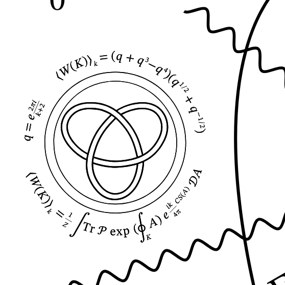
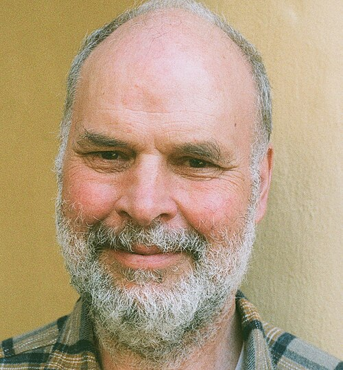

The Jones polynomial
Fuse the ends of a knotted rope and no amount of pulling will ever untie it. But how do you prove that two tangles are genuinely different knots, and not the same one in disguise? For a century that question embarrassed mathematics — until 1984, when Vaughan Jones, working on something else entirely, stumbled onto a way of assigning every knot an algebraic fingerprint. Different fingerprint, different knot. Guaranteed.
The medallion shows the trefoil — the simplest true knot, the one in your shoelaces before you make the bow — wrapped in the formulas that compute its fingerprint. A few years later Edward Witten showed the polynomial falls naturally out of quantum field theory, revealing that the mathematics of knots and the mathematics of particles had been the same subject all along. Nobody had planned that. It is the wall's favorite kind of story.